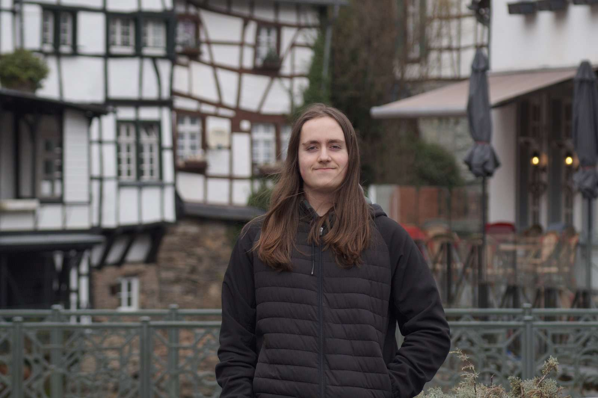

Joons.Dev
Welcome to my portfolio!
Here you will see most of my completed projects and you will learn about who i am and what im good at.
About Me
Hi! My name is Jonas, I live in Amstelveen in the Netherlands and I am currently studying game development at MediaCollege Amsterdam. I specialize in developing games in the unity engine but I am also trying to learn other software and programming languages. I hope to learn more about the unity engine and programming as a whole in the jobs I will work at.
Just like many others I was interested in videogames from a young age, I was always looking for new games to express my endless creativity in. That’s why some of my favourite games are those that encourage you to be creative such as games like; Minecraft, Scrap Mechanic and Terraria. But i do also love a good first person shooter.
I always do my best to handle everyone with the respect they deserve and to be as positive as possible, I can work efficiently in both a solo and a team environment and I always care about making the end product the best it can be. Currently I am still a student but I hope to soon be part of many great projects and learn a lot from the industry.
Contact
Feel free to reach out to me via the following platforms:
- Email: your.email@example.com
- LinkedIn: [Your LinkedIn]
- Twitter: [Your Twitter]